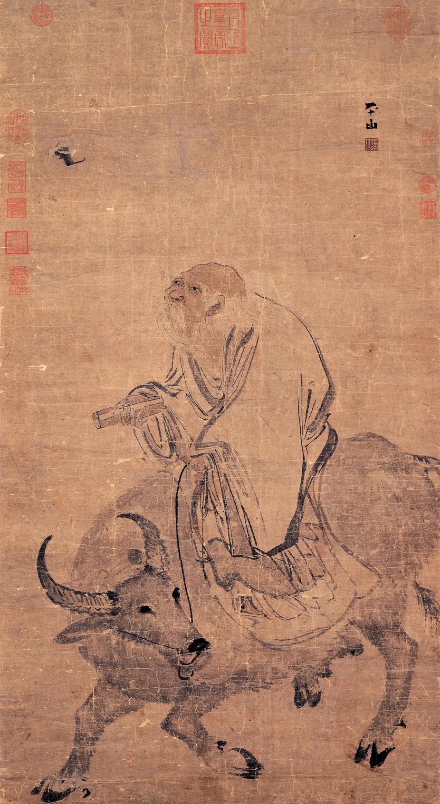
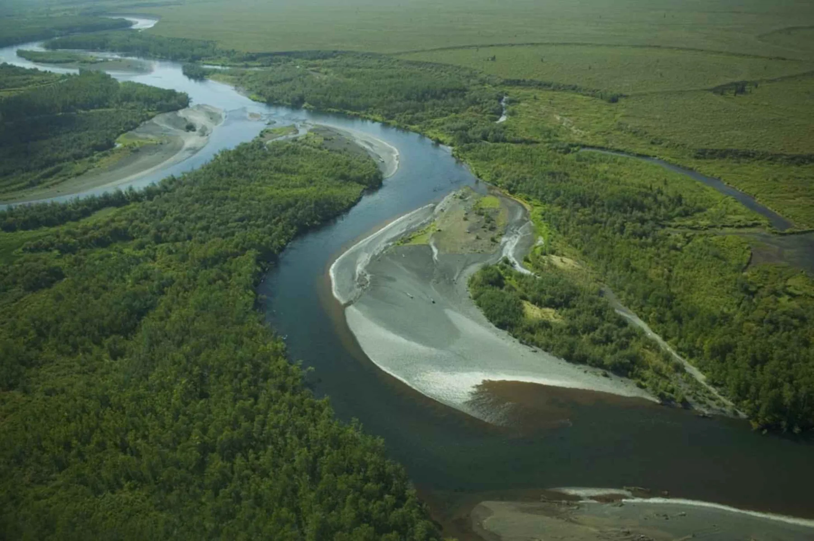
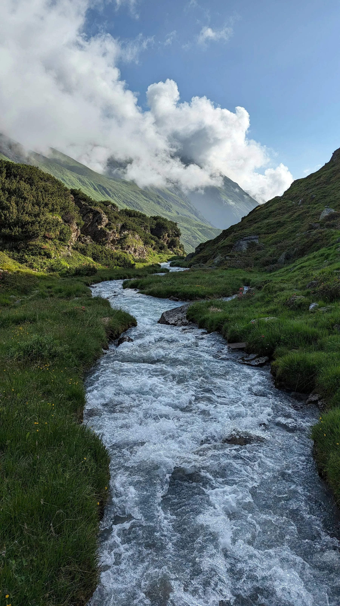

삶의 전환과 커리어 선택을 위한 1페이지 요약
물 흐르듯이 산다는 것：
편안함이 아니라
선택할 때를 아는 삶
흐름은 아무 결정도 하지 않는 상태가 아닙니다. 현재의 지형을 읽고, 멈춤·우회·전진 중 무엇이 필요한지 제때 선택하는 능동적 적응에 가깝습니다.
원문 출처 · TeaBoard 뉴스레터 ONE-LINE CONCLUSION
ONE-LINE CONCLUSION
앞으로 갑니다.
오해
‘물처럼’은 무조건 참고 수용한다는 뜻이 아닙니다.
신호
배움·자율성·관계가 장기간 막히면 정체를 의심합니다.
행동
감정만으로 결론 내리지 말고 대안과 준비도를 함께 봅니다.
SOURCE → RESEARCH → JUDGMENT
원문은 ‘이직 경험’을 말하고,
연구는 ‘정체의 구조’를 보완합니다
첨부 글은 개인의 전환 경험을 통해 ‘물 흐르듯이 산다’를 재해석한 에세이입니다. 보고서는 그 메시지를 존중하되, 모든 불편을 퇴사의 신호로 오해하지 않도록 커리어 정체 연구와 동기 이론을 덧붙였습니다.[1]
한 문장 결론
‘흐름’은 수동적 순응이 아니라 상황과 자기 욕구를 함께 읽는 판단 능력입니다. 머무름도 움직임도 자동으로 옳지 않으며, 무엇이 더 살아 있게 만드는지 검증해야 합니다.
천장이 느껴질 때 방향을 바꿀 수 있다
글쓴이는 현재 자리가 가능성을 더 담지 못한다고 느끼며, 떠남을 포기가 아니라 ‘다른 방향으로 다시 흐르는 선택’으로 설명합니다.[1]
정체는 승진뿐 아니라 업무 내용에서도 생긴다
커리어 플래토는 승진 가능성이 낮은 ‘위계 정체’와 새 책임·도전이 부족한 ‘내용 정체’로 구분됩니다.[6]
떠나기 전, 변화 가능성과 준비도를 함께 본다
구조적 막힘이 반복되고 내부 재설계가 실패했으며 외부 대안이 검증됐을 때, 전환은 충동이 아니라 준비된 선택에 가까워집니다.
THE CORE DISTINCTION
포기와 선택은
겉모습보다 ‘내부 구조’가 다릅니다
포기는 학습과 대안을 닫는 방향일 수 있습니다. 반면 선택은 현재 조건을 확인하고 다른 가능성을 시험한 뒤 책임 있게 경로를 바꾸는 과정입니다.
“막히는 일은 끝이 아니라 방향 전환의 신호”라는 원문의 문장은, ‘무조건 떠나라’보다 ‘신호를 읽어라’에 가깝습니다.[1]
PHILOSOPHICAL ROOTS
상선약수와 무위는
‘아무것도 하지 않음’이 아닙니다
『도덕경』 8장의 물은 만물을 이롭게 하고 다투지 않으며 낮은 곳에 머뭅니다. Parker J. Palmer는 이를 수동적인 “그냥 흘러감”이 아니라, 장애물 주위를 조용하고 끈질기게 흐르는 비폭력적 행동으로 읽습니다.[2][3]
이롭게 하되 다투지 않기
힘을 줄이는 것이 아니라 낭비를 줄입니다
정면충돌만을 유일한 해결법으로 보지 않고, 문제의 지형을 읽어 더 적은 마찰로 결과를 만드는 태도입니다.
형태를 바꾸는 적응
원칙은 지키고 경로는 바꿀 수 있습니다
도(道)는 하나의 고정 명령보다 가능한 길들의 구조에 가깝다는 현대적 해석이 있습니다. 자연의 길은 계속 변하고, 우리는 그 가능성 중 하나를 선택합니다.[4]
때를 읽는 행동
무위는 무기력이 아니라 맞는 힘을 쓰는 기술입니다
무위(無爲)는 게으름보다 상황의 실제 요구에 맞춘 ‘억지 없는 행동’으로 설명됩니다. 필요할 때는 바꾸고, 불필요한 강제는 덜어냅니다.[5]


중요한 경계: Palmer 역시 도가가 모든 상황의 완전한 답이라고 보지 않습니다. 부당함·폭력·거짓에 맞서 때로는 ‘물살을 거슬러야’ 한다고 분명히 적습니다. 그러므로 물의 비유는 책임 회피나 침묵을 정당화하는 면허가 아닙니다.[3]
CAREER PLATEAU
‘천장’은 기분만의 문제가 아니지만,
한 가지 신호로 단정할 수도 없습니다
40년간의 커리어 플래토 연구를 정리한 2019년 리뷰는 72개의 실증 연구를 검토했습니다. 정체는 대체로 만족·웰빙·조직몰입 저하와 이직 의도 증가 등과 연관됐지만, 개인과 조직의 대응 및 승진 중요도에 따라 효과가 달라질 수 있었습니다.[6]
Yang·Niven·Johnson의 2019년 체계적 개관이 포함한 연구 수입니다.
승진 경로가 막힌 위계 정체와, 새 도전이 사라진 업무 내용 정체입니다.
자율성·유능감·관계성이 동기와 웰빙을 진단하는 보조 렌즈가 됩니다.[10]
위계 정체
앞으로의 승진 가능성이 낮다고 지각하는 상태입니다. 직함·보상·권한의 경로가 사실상 닫혔다고 느낄 때 나타납니다.
1
승진 기준과 기회가 불투명하거나 반복적으로 연기됩니다.
2
성과가 역할·권한의 확장으로 이어지지 않습니다.
3
유사 직무의 내부 이동도 제한됩니다.
업무 내용 정체
새로운 책임과 도전이 부족하거나 일이 더 이상 배우게 하지 않는다고 느끼는 상태입니다. 승진과 별개로 발생할 수 있습니다.
✓
예측 가능한 반복 업무가 대부분을 차지합니다.
✓
새 기술·문제·고객을 경험할 기회가 거의 없습니다.
✓
잘하고는 있지만 성장하고 있다는 감각이 약합니다.
A
자율성 Autonomy
내가 중요하게 여기는 방향과 방법을 어느 정도 선택할 수 있는가?
C
유능감 Competence
도전하고 배우며, 더 잘할 수 있다는 감각이 살아 있는가?
R
관계성 Relatedness
존중받고 연결되어 있으며, 도움을 주고받을 수 있는가?
STAY, REDESIGN, OR MOVE
선택은 ‘남을까 떠날까’보다
회복 가능성과 방향 일치도를 함께 보는 일입니다
아래 2×2는 연구 검사지가 아니라 의사결정을 구조화하기 위한 실무용 프레임입니다. 감정의 강도보다, 현재 환경이 바뀔 수 있는지와 내가 원하는 성장 방향이 무엇인지 분리해 봅니다.
회복하고 관찰
방향 일치도와 회복 가능성이 모두 낮거나 불명확합니다. 휴식·건강·단기 갈등을 먼저 정리합니다.
머물며 재설계
하고 싶은 방향은 맞고 환경도 바뀔 수 있습니다. 역할·프로젝트·학습 기회를 구체적으로 협상합니다.
전환을 준비
현재 방향이 맞지 않고 내부 변화 가능성도 낮습니다. 외부 탐색과 재정·관계 준비를 병행합니다.
기한 있는 실험
방향은 맞지만 구조가 잘 바뀌지 않습니다. 4~8주 시한을 두고 재설계 결과를 검증합니다.
회복 가능성 낮음회복 가능성 높음 →
방향 일치도 높음방향 일치도 낮음
① 일시적 통증인가?
한 명의 상사, 한 프로젝트, 건강 악화, 특정 분기처럼 범위와 기간이 제한된 문제라면 회복 후 판단이 달라질 수 있습니다.
② 구조적 천장인가?
역할 재설계를 요청해도 반복적으로 기회가 닫히고, 팀·부서 이동으로도 바뀌지 않는다면 구조적 신호에 가깝습니다.
③ 다음 물길은 검증됐는가?
새 분야를 실제 프로젝트·멘토 대화·단기 협업으로 시험하지 않았다면, 현재의 불만을 미래의 적합성으로 착각할 수 있습니다.
감정이 가장 큰 날에 즉시 결론을 냅니다.
반복되는 패턴을 기록하고, 변화 요청과 작은 실험을 거친 뒤 판단합니다.
현재를 벗어나는 것만 목표로 삼습니다.
다음 환경에서 필요한 자율성·학습·관계 조건을 명시합니다.
기존 관계와 경험을 모두 끊어버립니다.
배운 것을 정리하고 다리를 보존하며, 재정·건강·가족 영향을 준비합니다.
A FOUR-WEEK WATERCOURSE TEST
결정 전에 다섯 단계를
한 바퀴 돌려보세요
핵심은 ‘기분을 무시하라’가 아니라, 그 기분이 무엇을 알려주는지 검증하는 것입니다. 관찰과 실험을 거치면 머무름도 전환도 더 책임 있는 선택이 됩니다.
01
신호 기록
에너지, 학습, 자율성, 관계, 반복되는 막힘을 2주 이상 기록합니다.
결과: 감정 → 패턴02
원인 구분
일시적 피로·특정 갈등·업무 구조·가치 불일치 중 무엇인지 분리합니다.
결과: 증상 → 원인 가설03
재설계 요청
새 책임, 프로젝트 이동, 학습 예산, 의사결정 참여를 구체적으로 제안합니다.
결과: 추측 → 조직 반응04
작은 실험
외부 멘토, 사이드 프로젝트, 단기 협업으로 다음 방향을 실제로 시험합니다.
결과: 환상 → 경험 데이터05
안전한 결정
기한, 재정, 건강, 가족, 인수인계와 성공 기준을 포함한 선택 메모를 씁니다.
결과: 충동 → 실행 계획SELF-CHECK
지금은 버틸 때인가,
물길을 바꿀 때인가?
아래 점검은 진단 도구가 아닌 대화용 휴리스틱입니다. ‘막힘의 구조성’과 ‘전환 준비도’를 분리해 점수화하면, 당장 퇴사할지보다 무엇을 먼저 준비해야 하는지가 보입니다.
30-DAY ACTION PLAN
한 달이면 ‘감정’에서
‘판단 가능한 데이터’로 이동할 수 있습니다
목표는 30일 안에 퇴사를 결정하는 것이 아니라, 머무름·내부 이동·단계적 전환·외부 이동 중 어떤 경로가 합리적인지 설명 가능한 상태가 되는 것입니다.
신호 일지
업무별 에너지, 배움, 자율성, 관계, 불공정, 회복 시간을 매일 3분 기록합니다.
산출물 · 반복 패턴 3개
재설계 대화
“성장하고 싶다”보다 원하는 책임·프로젝트·권한·기한을 구체적으로 제안합니다.
산출물 · 조직 반응과 약속
외부 실험
관심 분야 사람 3명과 대화하고, 작은 과제 하나를 직접 수행해 실제 적합성을 확인합니다.
산출물 · 기대와 현실의 차이
선택 메모
선택 이유, 반대 근거, 비용, 준비, 중단 기준, 첫 90일 계획을 한 장으로 정리합니다.
산출물 · Stay / Shift / Move
WATCH & REFLECT
철학은 영상으로,
전환은 실제 사례로 보세요
아래 영상은 원문에 포함된 자막이 아니라 보고서에서 추가한 보조 자료입니다. 첫 영상은 ‘직업의 부름을 듣는 법’, 둘째 영상은 ‘커리어를 바꿀 시점과 준비’를 다룹니다.
SUPPLEMENTARY VIDEO
Listening To Your Vocation with Parker J. Palmer
직업 선택을 외부 기준만이 아니라 삶이 보내는 신호를 듣는 과정으로 바라보는 긴 인터뷰입니다.[13]
YouTube에서 열기 →TED · PRACTICAL
How to know if it’s time to change careers
배움의 소진, 직감, 단기 통증을 구분하고 네트워크·재정·사이드 프로젝트로 전환을 준비하는 짧은 실무 영상입니다.[9]
YouTube에서 열기 →
RISKS & LIMITS
물의 비유가 아름다운 만큼,
오용 위험도 분명합니다
원문은 한 개인의 성찰이고, 커리어 연구 역시 평균적 경향을 다룹니다. 개인의 건강·재정·가족·법적 조건을 대신 판단해 주지는 않습니다.
수동성의 미화
“흐름에 맡긴다”가 갈등 회피·책임 회피·부당함에 대한 침묵으로 변하면 원문의 핵심과 반대가 됩니다.
단기 통증의 과대해석
힘든 한 주, 한 명의 상사, 일시적 건강 문제를 영구적 천장으로 단정하면 성급한 선택이 될 수 있습니다.
성과와 성장의 혼동
익숙한 일에서 성과가 높아도 배움은 멈출 수 있고, 새 도전에서 단기 성과가 낮아도 성장 중일 수 있습니다.
안전 우선 원칙: 괴롭힘, 차별, 폭력, 자해 위험, 심각한 번아웃, 임금·계약 분쟁이 있는 경우에는 ‘4주 실험’을 기다리지 말고 회사의 공식 보호 절차, 노동·법률·의료·심리 전문가의 도움을 우선합니다.